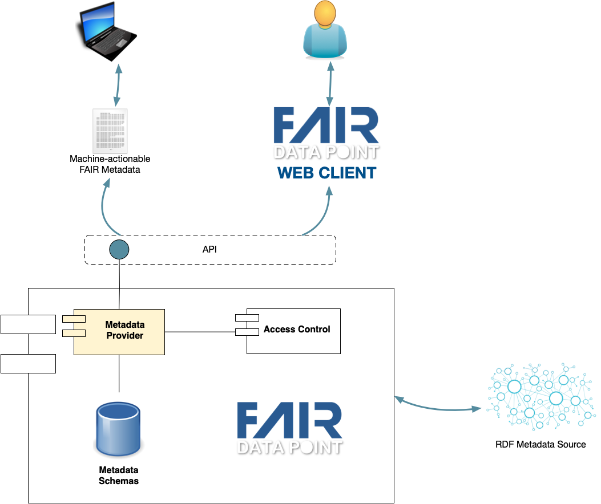
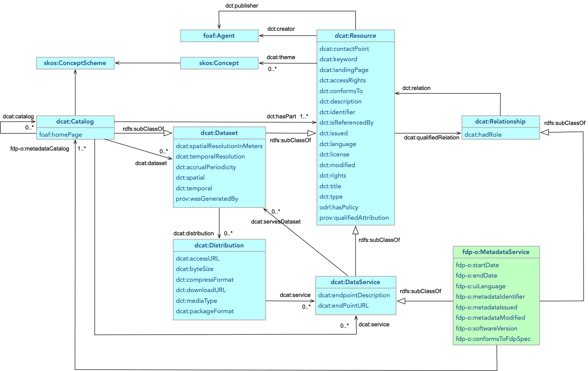

1. Introduction
FAIR Data Point (FDP) is a metadata service that provides access to metadata following the FAIR principles [FAIR-principles]. FDP uses a REST API for creating, storing and serving FAIR metadata. FDP is software that, from one side, allows digital objects owners/publishers to expose the metadata of their digital objects in a FAIR manner and, from the other side, allows digital objects' consumers to discover information (metadata) about offered digital objects. Commonly, the FAIR Data Point is used to expose metadata of datasets but metadata of other types of digital objects can also be exposed such as ontologies, repositories, analysis algorithms, websites, etc.
Many different repositories and their digital objects should interoperate in order to allow increasingly complex questions to be answered. These repositories and their content should be interoperable in order for client applications to autonomously (re)use them. However, interoperability happens at different levels, including syntactical and semantical interoperabilities. The FDP aims at addressing these interoperability issues by providing:
-
A common interface to access information (metadata) about digital objects;
-
A common representation format [RDF11-PRIMER] to express the metadata in a machine-actionable manner;
-
A common approach to inform to clients how to navigate through the FDP’s metadata structure;
-
A common representation format [SHACL] to represent each metadata record’s schema.
The main goal of the FDP is to establish a common method for metadata provisioning and accessing and, as a consequence, provide to client applications a predictable way of accessing and interacting with metadata content. To fulfill this goal, this document contains a set of specifications to help developers to extend the functionality of their applications so these applications can also behave as a FAIR Data Point.
1.1. Purpose
The purpose of this document is to specify the FAIR Data Point. This document includes requirements, architecture and design of the FDP as well as the metadata schemas used. This specification is primarily intended to be a reference for developers willing to add the FDP functionality into their existing applications or develop their own FAIR Data Point implementation. In order to better understand this specification, knowledge of RDF, LDP, SHACL and REST APIs is required.
1.2. Document conventions
Conformance requirements are expressed with a combination of descriptive assertions and RFC 2119 terminology. The key words "MUST", "MUST NOT", "REQUIRED", "SHALL", "SHALL NOT", "SHOULD", "SHOULD NOT", "RECOMMENDED", "MAY", and "OPTIONAL" in the normative parts of this document are to be interpreted as described in RFC 2119. However, for readability, these words do not appear in all uppercase letters in this specification.
All of the text of this specification is normative except sections explicitly marked as non-normative, examples, and notes. [RFC2119]
2. Overall Description
The basis for any infrastructure is its suitability to the issues it should address. Therefore, the first step is to identify these issues. One common approach for this identification is to investigate current practices that could benefit from a supporting infrastructure. Once we analyse these practices, we can elicit the requirements for the infrastructure. In this document we list a number of data usage scenarios that represent regular practices in data-intensive domains. These usage scenarios have been gathered through interactions with a variety of representative stakeholders in different domains. These stakeholders represent data producers, data consumers and providers of both infrastructure and services for supporting data activities.
2.1. Usage Scenarios
From the different semantic interoperability projects we have been and are involved in, the following usage scenarios have been identified. These usage scenarios do not represent one particular situation in a real project but depict data interoperability-related situations that we experienced in a number of different projects. From these scenarios we derived a set of requirements for metadata storage and accessibility infrastructure and they also guided the design and development of the solution.
2.1.1. Data discovery
A researcher needs to find datasets containing data about a given subject, e.g., proteins that are activated in specific tissues, polution level in a given region, or infrared observation of a particular galaxy; integrate the discovered data with other pre-selected datasets and analyse them. In another situation, the researcher needs to know which biobanks carry a given type of biosample (e.g., blood samples) from patients possessing a specific disease (e.g., Alzheimer’s disease) taken from a patient registry whose onset age was lower than 45 years old. These data users need to use a straightforward search application that allows them to find the required information. However, the search application first needs to have indexed information about existing datasets wherever their location.
2.1.2. Data access
Once a data user/consumer finds the desired datasets, including the information about their licenses and access protocols, the user wants to access the data, retrieving it, or sending an algorithm to analyse the data. In many situations the data user will integrate many different datasets. To carry out these integrations, the user needs to know in which formats the data can be accessed, and which access methods are available. This information comes in the form of metadata. In order to facilitate the usage of metadata, the method with which the metadata will be accessed should be common in all different metadata sources and a common representation technology should be used for the metadata.
2.1.3. (Meta)Data publication
An organization is running a project in which data is being created. The data will be analyzed during the project but may also be useful for other users. The group would therefore like to publish the data in a way that allows potential users to retrieve information about the datasets (metadata), allows data search engines to index the metadata, and allows users to acces the data. Some of the produced datasets have an open license but others have more restrictive licenses. All these metadata should be available so that potential data users would have enough information to assess whether the data described in the metadata fits their needs.
2.1.4. Publishing other types of content
An organization is running a project in which different types of deliverables will be created. One group is developing a piece of software, another group is working on a controlled vocabulary, while a third group will generate a number of reference documents. The organization would like to publish information about these materials so others could discover and reuse them.
3. Architecture
From the usage scenarios, we have identified a need for a metadata provisioning infrastructure that we call FAIR Data Point (FDP). The FDP has the following goals:
-
Allow owners/creators/publishers to expose the metadata of their digital objects in a way that follows the FAIR Data Principles.
-
Allow consumers/users to discover information about digital objects they are interested in.
-
Provide meaningful information about digital objects for both humans and software agents.
Based on these goals, Figure 3.1 depicts the general architecture of an FDP. In this architecture, the FDP exposes its functionality to the users through an application programming interface (API). In our reference implementation, besides the FDP itself we developed an FDP web client, which connects to the FDP API and allows human users to interact with the application through a web-based interface.

Figure 3.1 also depicts the FDP’s internal components, namely the Metadata Provider, Access Control, Metadata Schemas and the RDF Metadata Store.
-
Metadata Provider - responsible for the provisioning of the metadata content available in the FDP;
-
Access Control - reponsible for controlling the access to the metadata content. In general, metadata can be openly accessible for reading, but it is expected that only a select number of people have access to add, delete or edit the metadata content. Moreover, in some situations, metadata or part of the metadata may also have access restrictions for reading. The Access Control component makes sure that these restrictions are enforced;
-
RDF Metadata Source - The FDP MUST present its metadata content as
RDF, and, more specifically, in at leastturtleandJSON-LDsyntaxes. Therefore, these metadata can be stored in an RDF Metadata Source. The FDP reference implementation supports native in-memory or on-disk storage, as well as the connection with existing triple stores such as GraphDB, Allegro Graph, Blazegraph, etc. If one is extending an existing application based on this FDP specification, the RDF metadata can be provided using different implementation strategies. For instance, metadata stored in other representation formats can be dynamically converted to RDF through a conversion component that serves as the RDF Metadata Source. -
Metadata Schemas - the FDP exposes metadata about different types of digital objects, e.g., repositories, content catalogs, and datasets, among others. These metadata should comply with schemas defined by their related communities. In the FDP, the metadata schemas MUST be represented in
SHACL. The FDP reference implementation is shipped with four basic metadata schemas: for the FDP itself as a metadata service, for catalogs, for datasets, and for datasets' distributions. These schemas allow the FDP to check and validate metadata content that is added. Addition of metadata schemas for other types of digital objects and extensions of the base schemas are also supported by the FDP reference implementation.
4. Metadata
The FAIR principles give special attention to metadata. In fact, all principles relate to metadata in at least one aspect. Metadata can be defined as data that provides information about other data. Here we extend this notion to define metadata as information about other digital objects. This information includes descriptions of the origin, structure, provenance, rights and obligations, or other characteristics of digital objects. The FAIR Data Point’s metadata approach follows this idea of supporting the creation of metadata about different types of digital objects. The first object to provide metadata about is the FDP itself. When a client interacts with a service, it should know what it is dealing with. Therefore, the FDP provides metadata about itself and, from that point on, the client can navigate its metadata content to discover the other metadata records.
The FDP uses the W3C’s Data Catalog Vocabulaire (DCAT) version 2 [VOCAB-DCAT-2] model as the basis for its metadata content. Figure 4.1 depicts the FDP extensions to the DCAT model.

A DCAT Resource represents entities that can be described by a metadata record.
Since Resource is defined as an abstract class, it is not intended to be used directly.
We should use one of its subclasses, such as Dataset or Data Service instead.
Dataset represents a collection of data while Data Service represents a service, accessible through an interface (API), that serves datasets.
Catalog, a subclass of Dataset, represents aggregations of metadata records about digital objects.
For instance, a Catalog may contain references to the metadata records of Datasets.
The FDP extends the DCAT model by adding the concept of a FAIRDataPoint as a specific type of data service that serves metadata catalogs and metadata records.
The DCAT extensions and other FDP-specific concepts and relations are defined in the FDP ontology (using the namespace prefix fdp-o).
In the FDP ontology, the FAIR Data Point is represented by a sub-class of the concept of MetadataService.
Figure 4.1 only depicts the properties that are not already inherited from Data Service and Resource.
With the definition of the FDP as a type of metadata service that serves metadata catalogs, the relation between the MetadataService and dcat:Catalog is represented by the predicate fdp-o:metadataCatalog.
Following the DCAT approach of providing qualified relations between resources, the fdp-o:metadataCatalog is defined as a sub-property of dcat:Relationship having fdp-o:MetadataService as its domain and dcat:Catalog as its range.
An implementation of the FDP specifications MUST minimally provide the metadata records of the MetadataService, and the metadata records of the other types of resources MUST be grouped in at least one Catalog.
4.1. Navigation information
Since the FDP supports the provisioning of metadata about different types of digital objects and the relations among these metadata records can be customized, each FDP installation may have a different structure.
For instance, the FDP reference implementation is pre-loaded with the structure of metadata about FAIR Data Point → Catalog → Dataset → Distribution.
Another FDP could have a different metadata structure, e.g., FAIR Data Point → Catalog → Semantic Artefact.
With this flexibility, a client application would not know how to navigate the FDP metadata content unless it follows all URIs in the metadata, which may be extensive.
Therefore, the FDP MUST describe its own navigation structure.
This navigation information MUST be provided by using the Linked Data Platform (LDP) containment predicates ldp:contains or ldp:hasMemberRelation.
This information MUST be present in every metadata record that leads to other metadata records.
The following RDF turtle code shows an example of a MetadataService metadata record with navigation information.
@prefix dct: <http://purl.org/dc/terms/> . @prefix fdp-o: <https://w3id.org/fdp/fdp-o#> . @prefix ldp: <http://www.w3.org/ns/ldp#> . <https://fairdatapoint.org/app> a fdp-o : FairDataPoint dct : title "Demonstration FAIR Data Point" ; dct : conformsTo <https://www.purl.org/fairtools/fdp/schema/0.1/fdpMetadata> ; dct : description "This FAIR Data Point deployment is used for demonstration of the application and to allow the navigation through its metadata content. The metadata presented here is also for demonstration purposes only and not necessarily describe properly their related resources." ; dct : hasVersion "1.0" ; dct : license <http://rdflicense.appspot.com/rdflicense/cc-by-nc-nd4.0> ; dct : publisher <https://purl.org/fairdatapoint/app#publisher> ; fdp-o : metadataIdentifier <https://purl.org/fairdatapoint/app#identifier> ; fdp-o : metadataIssued "2020-05-29T09:55:08.580Z" ^^ <http://www.w3.org/2001/XMLSchema#dateTime>; fdp-o : metadataModified "2020-09-30T11:17:43.008Z" ^^ <http://www.w3.org/2001/XMLSchema#dateTime>; fdp-o : metadataCatalog <https://purl.org/fairdatapoint/app/catalog/3dde263d-0a7c-4f2a-9813-ccb3a51f70a8> , <https://purl.org/fairdatapoint/app/catalog/508d3c96-8106-49d2-910c-13706aca75e3> , <https://purl.org/fairdatapoint/app/catalog/6e43c568-c6fa-41c8-a88a-7ee4c85035af> , <https://purl.org/fairdatapoint/app/catalog/a46aa445-3be0-4db8-8968-3338d1061a47> , <https://purl.org/fairdatapoint/app/catalog/a91d3db7-fe83-4de1-b678-fe1b0c82f2f1> . <https://purl.org/fairdatapoint/app/catalog/> a ldp : DirectContainer ; dct : title "Catalogs" ; ldp : membershipResource <https://fairdatapoint.org/app> ; ldp : hasMemberRelation fdp-o : metadataCatalog ; ldp : contains <https://purl.org/fairdatapoint/app/catalog/3dde263d-0a7c-4f2a-9813-ccb3a51f70a8> , <https://purl.org/fairdatapoint/app/catalog/508d3c96-8106-49d2-910c-13706aca75e3> , <https://purl.org/fairdatapoint/app/catalog/6e43c568-c6fa-41c8-a88a-7ee4c85035af> , <https://purl.org/fairdatapoint/app/catalog/a46aa445-3be0-4db8-8968-3338d1061a47> , <https://purl.org/fairdatapoint/app/catalog/a91d3db7-fe83-4de1-b678-fe1b0c82f2f1> .
In the metadata record, the FDP (f:app) has the relation fdp-o:metadataCatalog with its catalogs.
This is the parent-child relation that should be followed by a client that wants to navigate the FDP metadata structure.
To explicitly inform the navigation structure, we have the code segment at the bottom of this example metadata record informing that we have a container, identified as https://purl.org/fairdatapoint/app/catalog/, which is the container for the https://purl.org/fairdatapoint/app (the object of the ldp:membershipResource) and it relates to its contained members using the relation fdp-o:metadataCatalog.
4.2. Metadata schemas
The FAIR Data Point supports user defined metadata schemas. This follows the acknowledgment that every application scenario may require different sets of properties to properly describe a given digital object. Moreover, the metadata records may have some relevant relationships that connect one to other. For instance, it seems straightforward to argue that a FAIR Data Point, as a metadata service, may have a number of catalogs that are used to organise the metadata records of other types of digital object, for instance, datasets.
Therefore, to improve interoperability and provide a minimal level of predictability and organisation of different FDPs, the metadata structure of the FDP starts with the metadata of itself (as a metadata service), followed by the catalogs that it contains, and each catalog contains the metadata of given types of digital objects.
Below we present the metadata schemas of the two types of digital object that are mandatory for each FDP: the FAIR Data Point and the Catalog.
NOTE: In the FDP Ontology the FAIR Data Point is defined as a subclass of MetadataService, which is a sub-class of dcat:DataService.
4.2.1. FAIR Data Point metadata
| Ontology | Property name | Datatype | Cardinality | Description |
|---|---|---|---|---|
| RDF | rdf:type | IRI | 1 | The type of the object described by the metadata record, which, in this case, is a FAIR Data Point.
The value MUST be fdp-o:FAIRDataPoint.
|
| DC terms | dct:title | String | 1..* | Name of the FAIR Data Point with the language tag. |
| dct:description | String | 0..* | Description of the FAIR Data Point with the language tag. | |
| dct:publisher | foaf:Agent
| 1..* | The entity or entities (person or organization) responsible for the FAIR Data Point. | |
| dct:language | IRI | 0..* | The language(s) used in the metadata record. | |
| dct:license | IRI | 1 | The reference to the usage license of the FAIR Data Point. | |
| dct:conformsTo | IRI | 1 | This property points to a profile that contains the specification of the FAIR Data Point’s metadata schema (in SHACL).
| |
| dct:rights | IRI | 0..* | ||
| dct:accessRights | IRI | 0..* | ||
| DCAT | dcat:contactPoint | vCard
| 0..* | Relevant contact information for the FAIR Data Point. |
| dcat:keyword | String | 0..* | Keyword(s) describing the FAIR Data Point. | |
| dcat:theme | skos:subject
| 0..* | Main concept(s) related to the FAIR Data Point. DCAT themes are similar to keywords in the sense of representing concepts that are related to the entity. However, keywords are natural language terms, intended for human consumption, whereas themes are concepts defined in ontologies/vocabularies, for machine consumption. | |
| dcat:endPointURL | IRI | 1 | The URL of the FDP API endpoint. | |
| dcat:endPointDescription | IRI | 0..* | The URL of the document describing the endpoint, its operations, services, parameters, etc. The description should be expressed in a machine-readable format, such as an OpenAPI or SmartAPI description. | |
| FDP ontology | fdp-o:metadataIdentifier | IRI
| 1 | Identifier of the metadata entry. |
| fdp-o:metadataIssued | xsd:dateTime
| 1 | Creation data of the metadata entry. | |
| fdp-o:metadataModified | xsd:dateTime
| 1 | Last modified data of the metadata entry. | |
| fdp-o:startDate | xsd:date | 0..1 | Date when the metadata service started its operations. | |
| fdp-o:endDate | xsd:date | 0..1 | Date when the metadata service ended its operations. | |
| fdp-o:uiLanguage | IRI | 0..* | The user interface language(s) of the FAIR Data Point, which is different from the dcat:Resource property of dct:language that relates to the language of the metadata record.
| |
| fdp-o:hasSoftwareVersion | String | 0..1 | Version of the metadata service software that exposes the FDP behaviour. | |
| fdp-o:conformsToFdpSpec | IRI | 1 | The relation should point to a URI that contains the version of the FDP specifications which this instance of the FDP conforms to. |
The navigation information for the FAIR Data Point metadata record is defined below:
| Ontology | Property name | Datatype | Cardinality | Description |
|---|---|---|---|---|
| RDF | rdf:type | IRI | 1 |
The type of the object described by the navigation information metadata segment which, in this case, is a Direct Container.
The value MUST be ldp:DirectContainer.
|
| DC terms | dct:title | String | 1..* | Name of the container. |
| LDP | ldp:contains | IRI
| 1..* |
Identifier of the resources contained in this container.
In this case, the identifiers of the catalogs available in this FAIR Data Point.
The object of this property MUST be an instance of dcat:Catalog or a sub-class of it.
|
| LDP | ldp:hasMemberRelation | IRI
| 1 |
This relation points to the URI of the custom relation/predicate used to relate the FAIR Data Point with its member catalogs.
The object of this property MUST be fdp-o:metadataCatalog.
|
| LDP | ldp:membershipResource | IRI
| 1 |
This relation points to the identifier of the FAIR Data Point that is related to this container.
The object of this property MUST be an instance of fdp-o:FAIRDataPoint.
|
Below we have the FAIR Data Point metadata schema defined in SHACL.
@prefix : <http://fairdatapoint.org/> . @prefix dcat: <http://www.w3.org/ns/dcat#> . @prefix dct: <http://purl.org/dc/terms/> . @prefix fdp-o: <https://w3id.org/fdp/fdp-o#> . @prefix foaf: <http://xmlns.com/foaf/0.1/> . @prefix ldp: <http://www.w3.org/ns/ldp#> . @prefix sh: <http://www.w3.org/ns/shacl#> . @prefix xsd: <http://www.w3.org/2001/XMLSchema#> . : FAIRDataPointShape a sh : NodeShape ; sh : targetClass fdp-o : FAIRDataPoint ; sh : property [ sh : path dct : title ; sh : nodeKind sh : Literal ; sh : minCount 1 ; ], [ sh : path dct : hasVersion ; sh : nodeKind sh : Literal ; sh : maxCount ; ], [ sh : path dct : description ; sh : nodeKind sh : Literal ; ], [ sh : path fdp-o : metadataCatalog ; sh : node : CatalogShape ; sh : minCount 1 ; ], [ sh : path dct : publisher ; sh : node : AgentShape ; sh : minCount 1 ; ], [ sh : path dct : language ; sh : nodeKind sh : IRI ; ], [ sh : path dct : license ; sh : nodeKind sh : IRI ; sh : minCount 1 ; sh : maxCount 1 ; ], [ sh : path dct : conformsTo ; sh : nodeKind sh : IRI ; sh : maxCount 1 ; sh : minCount 1 ; ], [ sh : path dct : rights ; sh : nodeKind sh : IRI ; ], [ sh : path dct : accessRights ; sh : nodeKind sh : IRI ; ], [ sh : path dcat : contactPoint ; sh : node sh : ContactPointShape ; ], [ sh : path dcat : keyword ; sh : nodeKind sh : Literal ; ], [ sh : path dcat : theme ; sh : nodeKind sh : IRI ; ], [ sh : path dcat : endPointURL ; sh : nodeKind sh : IRI ; sh : maxCount 1 ; sh : minCount 1 ; ], [ sh : path fdp-o : startDate ; sh : datatype xsd : date ; sh : maxCount 1 ; ], [ sh : path fdp-o : endDate ; sh : datatype xsd : date ; sh : maxCount 1 ; ], [ sh : path fdp-o : metadataIdentifier ; sh : nodeKind sh : IRI ; sh : maxCount 1 ; sh : minCount 1 ; ], [ sh : path fdp-o : metadataIssued ; sh : datatype xsd : dateTime ; sh : maxCount 1 ; sh : minCount 1 ; ], [ sh : path fdp-o : metadataIdentifier ; sh : datatype xsd : dateTime ; sh : maxCount 1 ; sh : minCount 1 ; ], [ sh : path dct : conformsToFdpSpec ; sh : nodeKind sh : IRI ; sh : maxCount 1 ; sh : minCount 1 ; ]. : AgentShape a sh : NodeShape ; sh : targetClass foaf : Agent ; sh : property [ sh : path foaf : name ; sh : nodeKind sh : Literal ; sh : maxCount 1 ; sh : minCount 1 ; ]. : ContactPointShape a sh : NodeShape ; sh : targetClass vcard : Kind ; sh : property [ sh : path vcard : hasEmail ; sh : nodeKind sh : Literal ; sh : maxCount 1 ; sh : minCount 1 ; ]. : FAIRDataPointContainerShape a sh : NodeShape ; sh : targetClass ldp : DirectContainer ; sh : property [ sh : name "title" ; sh : description "Name identifying the member resources" ; sh : path dct : title ; sh : nodeKind sh : Literal ; sh : minCount 1 ; sh : uniqueLang true ; ], [ sh : name "membership resource" ; sh : description "" ; sh : path ldp : membershipResource ; sh : nodeKind fdp-o : FAIRDataPoint ; sh : maxCount 1 ; sh : minCount 1 ; ], [ sh : name "has member relation" ; sh : description "The predicate used in the metadata to relate the FAIR Data Point with its member catalogs." ; sh : path ldp : hasMemberRelation ; sh : nodeKind fdp-o : metadataCatalog ; sh : maxCount 1 ; sh : minCount 1 ; ], [ sh : name "contains" ; sh : description "A set of triples, maintained by the LDP container, that lists documents created by the LDP container." ; sh : path ldp : contains ; sh : node : CatalogShape ; ].
4.2.2. Catalog metadata
| Ontology | Property name | Datatype | Cardinality | Description |
|---|---|---|---|---|
| RDF | rdf:type | IRI | 1 |
The type of the object described by the metadata record which, in this case, is a catalog.
The value should be of type dcat:Catalog.
|
| DC terms | dct:title | String | 1..* | Name of the catalog with the language tag. |
| dct:hasVersion | String | 0..1 | Version of the catalog. | |
| dct:description | String | 0..* | Description of the catalog with the language tag. | |
| dct:publisher | foaf:Agent
| 1..* | The entity or entities (person or organization) responsible for the catalog. | |
| dct:language | IRI | 0..* | The language(s) used in the catalog. | |
| dct:license | IRI | 1 | The reference to the usage license of the catalog. | |
| dct:issued | DateTime | 0..1 | The creation date of the catalog metadata record. | |
| dct:modified | DateTime | 0..1 | The last modified date of the catalog metadata record. | |
| dct:conformsTo | IRI | 1 | The specification of the catalog metadata schema (in SHACL).
| |
| dct:rights | IRI | 0..* | ||
| dct:accessRights | IRI | 0..* | ||
| dct:hasPart | IRI | 1..* |
The relation between the catalog and its items.
This is the most general predicate for membership of a catalog.
It is recommended to use more specific sub-properties such as dcat:dataset, dcat:catalog, dcat:service, or a custom sub-property.
| |
| dct:isPartOf | IRI | 1 | Relation to the parent metadata. In this case the metadata service metadata. | |
| DCAT | dcat:themeTaxonomy | IRI
| 1 |
A knowledge organization system (KOS) used to classify the resources that are part of this catalog.
It is recommended that the taxonomy is organized in a skos:ConceptScheme, skos:Collection, owl:Ontology, or similar.
|
| FDP ontology | fdp-o:metadataIdentifier | IRI
| 1 | Identifier of the metadata entry. |
| fdp-o:metadataIssued | xsd:dateTime
| 1 | Creation date of the metadata entry. | |
| fdp-o:metadataModified | xsd:dateTime
| 1 | Last modified date of the metadata entry. | |
| FOAF | foaf:homepage | IRI | 0..1 | The URL of the catalog HTML version. |
Below we have a catalog metadata schema defined in SHACL.
@prefix : <http://fairdatapoint.org/> . @prefix dcat: <http://www.w3.org/ns/dcat#> . @prefix dct: <http://purl.org/dc/terms/> . @prefix foaf: <http://xmlns.com/foaf/0.1/> . @prefix sh: <http://www.w3.org/ns/shacl#> . @prefix xsd: <http://www.w3.org/2001/XMLSchema#> . : CatalogShape a sh : NodeShape ; sh : targetClass dcat : Catalog ; sh : property [ sh : path dct : title ; sh : nodeKind sh : Literal ; sh : minCount 1 ; ], [ sh : path dct : hasVersion ; sh : nodeKind sh : Literal ; sh : maxCount ; ], [ sh : path dct : description ; sh : nodeKind sh : Literal ; ], [ sh : path dct : publisher ; sh : node : AgentShape ; sh : minCount 1 ; ], [ sh : path dct : language ; sh : nodeKind sh : IRI ; ], [ sh : path dct : license ; sh : nodeKind sh : IRI ; sh : minCount 1 ; sh : maxCount 1 ; ], [ sh : path dct : conformsTo ; sh : nodeKind sh : IRI ; sh : maxCount 1 ; sh : minCount 1 ; ], [ sh : path dct : rights ; sh : nodeKind sh : IRI ; ], [ sh : path dct : accessRights ; sh : nodeKind sh : IRI ; ], [ sh : path dct : hasPart ; sh : node sh : ContactPointShape ; ], [ sh : path dcat : keyword ; sh : nodeKind sh : Literal ; ], [ sh : path dcat : theme ; sh : nodeKind sh : IRI ; ], [ sh : path dcat : endPointURL ; sh : nodeKind sh : IRI ; sh : maxCount 1 ; sh : minCount 1 ; ], [ sh : path fdp-o : startDate ; sh : datatype xsd : date ; sh : maxCount 1 ; ], [ sh : path fdp-o : endDate ; sh : datatype xsd : date ; sh : maxCount 1 ; ], [ sh : path fdp-o : metadataIdentifier ; sh : nodeKind sh : IRI ; sh : maxCount 1 ; sh : minCount 1 ; ], [ sh : path fdp-o : metadataIssued ; sh : datatype xsd : dateTime ; sh : maxCount 1 ; sh : minCount 1 ; ], [ sh : path fdp-o : metadataIdentifier ; sh : datatype xsd : dateTime ; sh : maxCount 1 ; sh : minCount 1 ; ]. : AgentShape a sh : NodeShape ; sh : targetClass foaf : Agent ; sh : property [ sh : path foaf : name ; sh : nodeKind sh : Literal ; sh : maxCount 1 ; sh : minCount 1 ; ]. : ContactPointShape a sh : NodeShape ; sh : targetClass vcard : Kind ; sh : property [ sh : path vcard : hasEmail ; sh : nodeKind sh : Literal ; sh : maxCount 1 ; sh : minCount 1 ; ].
Since only the MetadataService and Catalog metadata are mandatory in an FDP, from the catalog on, the metadata structure of the FDP will vary from deployment to deployment.
However, as the FDP is most commonly used to provide metadata of datasets, the FDP reference implementation follows the DCAT model and bundles two more metadata schemas, namely, the Dataset and Distribution metadata schemas.
If the administrator of the FDP wishes, he/she can just remove these two schemas and define custom schemas, as long as they are subclasses of the DCAT Resource class.
If other types of digital objects beside dcat:Dataset are used in the FAIR Data Point, the catalog metadata should contain the navigation information from the catalog to the digital object metadata, similar to that defined for the FAIR Data Point and catalog in § 4.2.1 FAIR Data Point metadata.
5. API
The API of the FDP follows the REST HATEOAS (Hypermedia as the Engine of Application State) guidelines by providing information so that the client is able to discover the available actions and access the resources it needs. Therefore, the client application is able to navigate through the API and its content from the information available from the content returned in each API call. This navigation information is provided through the Linked Data Platform (LDP) section as described in § 4.1 Navigation information.
Since the FDP allows client applications to dynamically discover how to navigate its content, the clients only need to have the URL of the root of the FDP API, and that URL MUST provide the metadata of the FDP itself, i.e., the MetadataService metadata.
6. FDP Specification Compliance
The aim of this specification is to guide developers in implementing their own FAIR Data Points or in extending existing applications with the FDP behaviours, thus exposing their metadata in a FAIR way.
In order to verify whether and application behaves as a FAIR Data Point according to these specifications, the following characteristics must be present:
-
Its root API URL MUST provide the
MetadataServicemetadata; -
The metadata content MUST be presented in, at least, RDF Turtle and JSON-LD syntaxes. Other formats such as XML, JSON and other RDF syntaxes are allowed through content negotiation but the default media type for the HTTP(S) request MUST be RDF Turtle.
-
Each metadata record SHOULD have a reference to its own profile which, in its turn, MUST point to the metadata schema expressed in [SHACL];
-
The metadata schema expressed in [SHACL] MUST have as its target class a sub-class of
dcat:Resource; -
The information about how to navigate the metadata content structure of the FDP MUST be provided in each metadata record using the Linked Data Platform (LDP) containment structure (
ldp:hasMemberRelation) - see § 4.1 Navigation information.